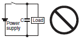

Building Automation
Industrial Automation
Power Automation & Safety


Bangladesh Distributor
Basic Switches
|
|
|
|
| Safety Precautions |
For the individual precautions for a Switch, refer to the precautions in the section for that Switch.
Precautions for Safe Use
Always observe the following cautions to ensure safety.
Mounting
Before mounting, dismounting, wiring, or inspecting a switch, be sure to turn OFF the power supply to the switch, otherwise an electric shock may be received or the switch may burn.
Wiring
Do not perform wiring when power is being supplied to a switch. Also, do not touch any of the charged terminals when power is being supplied. Otherwise, electric shock may be received.
Follow the instructions provided in Correct Use for all wiring and soldering work. Using a switch with improper wiring or soldering may result in abnormal heating when power is supplied, possibly resulting in burning.
Contact Load
Select suitable switch ratings after confirming contact load. If the contact load is excessive for the contacts, the contacts may weld or shift, possibly resulting in short-circuits or burning when power is supplied.
Load Types
Some types of loads have a large difference between steady-state current and inrush current, as shown in the following diagram. Select a switch with ratings suitable for the type of load. Select a switch with ratings suitable for the type of load. The higher the inrush current in the closed circuit is, the more the contact abrasion or shift there will be. Consequently, contact welding or shifting may occur, possibly resulting in short-circuits or burning.
Types of Load vs. Inrush Current
Operating Atmosphere
Do not use switches in atmospheres containing combustible or explosive gases. Arc or heat generated by switching may cause fires or explosions.
Shock on Individual Switches
Do not drop or disassemble switches. Not only will characteristics be jeopardized, but also damage, electric shock, or burning may result.
Durability
The durability of a switch greatly varies with switching conditions. Before using a switch, be sure to test the switch under actual conditions in the actual application and to use the switch within the switching operations causing no problem. If a deteriorated switch is used continuously, insulation failures, contact welding, contact failures, switch damage, or switch burnout may result.
Precautions for Correct Use
Using Switches
When switches are actually used, unforeseen accidents may occur. Before using a switch, perform all possible testing in advance.
Unless otherwise specified, ratings and performances given in this catalog are for standard test conditions (i.e., 15 to 35°C, 25% to 75% humidity, and 86 to 106 kPa atmospheric pressure). When performing testing in the actual application, always use the same conditions as will be used in actual usage conditions for both the load and the operating environment.
Reference data provided in this catalog represents actual measurements from production samples in graph form. All reference data values are nominal.
All ratings and performance values provided in this catalog are the results of a single test each rating and performance value therefore may not be met for composite conditions.
Selecting Correct Switch
Select an appropriate switch for the operating environment and load conditions.
Use the Selection Guide to select a suitable switch for the rated current, operating load, actuator type, and operating environment.
It is not recommended to use a switch for a large current to switch a micro current, in terms of contact reliability. Select a switch that is suitable for the current actually being switched.
Consider using a sealed switch in environments subject to water droplets.
Electrical Conditions
1. Operating Load
The switching capacity of a switch significantly differs depending on whether the switch is used to break an alternating current or a direct current. Be sure to check both the AC and DC ratings of a switch. The control capacity will drop drastically if it is a DC load. This is because a DC load, unlike an AC load, has no current zero cross point. Therefore, if an arc is generated, it may continue for a comparatively long time. Furthermore, the current direction is always the same, which results in contact relocation phenomena, and the contacts hold each other with ease and will not separate if the surfaces of the contacts are uneven.
If the load is inductive, counter-electromotive voltage will be generated. The higher the voltage is, the higher the generated energy is, which increase the abrasion of the contacts and contact relocation phenomena. Make sure to use a switch within the rated conditions.
If a switch is used for switching both micro and high-capacity loads, be sure to connect relays suitable to the loads.
The rated loads of a switch are according to the following conditions:
Inductive Load: A load having a minimum power factor of 0.4 (AC) or a maximum time constant of 7 ms (DC).
Lamp Load: A load having an inrush current ten times the steady-state current.
Motor Load: A load having an inrush current six times the steady-state current.
Note: It is important to know the time constant (L/R) of an inductive load in a DC circuit.
Inrush Current
2. Using Switches with Electronic Circuits
If bouncing or chattering of the contacts results and causes problems, take the following countermeasures.
(a) Insert an integral circuit.
(b) Suppress the generation of pulse from the contact bouncing or chattering of the contacts so that it is less than the noise margin of the load.
Use microload switches that use gold contacts particularly if high contact reliability is required.
In order to protect the Switch from damage due to short-circuits, be sure to connect a quick-response fuse with a breaking current 1.5 to 2 times larger than the rated current to the Switch in series.
When complying with EN approved ratings, use a 10-A IEC 60269-compliant gI or gG fuse.
3. Using Switches for Micro Loads
Contact faults may occur if a Switch for a general-load is used to switch a micro load circuit. Use switches in the operating range shown in the following diagram. However, even when using micro load models within the operating range shown here, if inrush current occurs when the contact is opened or closed, it may increase contact
wear and so decrease durability. Therefore, insert a contact protection circuit where necessary. The minimum applicable load is the N-level reference value. This value indicates the malfunction reference level for the reliability level of 60% (λ60).
The equation, λ60 = 0.5 × 10-6/operations indicates that the estimated malfunction rate is less than 1/2,000,000 operations with a reliability level of 60%.
4. Contact Protective Circuit
Apply a contact protective circuit (e.g., surge protector) to increase the contact durability, prevent noise, and suppress the generation of carbide or nitric acid. Be sure to apply the contact protective circuit correctly. Otherwise, an adverse effect may occur.
The following provides typical examples of contact protective circuits. If the Switch is used in an excessively humid location for switching a load that easily generates arcs, such as an inductive load, the arcs may generate nitrogen oxide (NOx), which will change into nitric acid (HNO3) if it reacts with moisture. Consequently, the internal metal parts may corrode and the Switch may fail. Be sure to select the ideal contact preventive circuit from the following. Also, load operating times may be delayed somewhat if a contact protective circuit (a surge killer) is used.
Typical Examples of Contact Protective Circuits (Surge Killers)
O: Applicable ×: Not applicable Δ: Conditional
| Circuit example | Applicable current | Feature | Element selection | ||
| AC | DC | ||||
| CR circuit | △ * | ○ | *When AC is switched, the load impedance must be lower than the C and R impedance. | C: 0.5 to 1 μF per switching current (1 A) R: 0.5 to 1 Ω per switching voltage (1 V) The values may change according to the characteristics of the load. The capacitor suppresses the spark discharge of current when the contacts are open. The resistor limits the inrush current when the contacts are closed again. Consider these roles of the capacitor and resistor and determine the ideal capacitance and resistance values from experimentation. Use a capacitor with a dielectric strength between 200 and 300 V. When AC is switched, make sure that the capacitor has no polarity. If, however, the ability to control arcs between contacts is a problem for high DC voltage, it may be more effective to connect a capacitor and resistor between the contacts across the load. Check the results by testing in the actual application. | |
| ○ | ○ | The operating time will increase if the load is a relay or solenoid. It is effective to connect the CR circuit in parallel to the load when the power supply voltage is 24 or 48 V and in parallel to the contacts when the power supply voltage is 100 to 200 V. | |||
| Diode method | × | ○ | Energy stored in the coil is changed into current by the diode connected in parallel to the load. Then the current flowing to the coil is consumed and Joule heat is generated by the resistance of the inductive load. The reset time delay in this method is longer than that of the CR method. | The diode must withstand a peak inverse voltage 10 times higher than the circuit voltage and a forward current as high as or higher than the load current. | |
| Diode and Zener diode method | × | ○ | This method will be effective if the reset time delay caused by the diode method is too long. | Zener voltage for a Zener diode must be about 1.2 times higher than the power source since the load may not work under some circumstances. | |
| Varistor method | ○ | ○ | This method makes use of constant-voltage characteristic of the varistor so that no high-voltage is imposed on the contacts. This method causes a reset time delay more or less. It is effective to connect varistor in parallel to the load when the supply voltage is 24 to 48 V and in parallel to the contacts when the supply voltage is 100 to 200 V. | Select the varistor so that the following condition is met for the cut voltage Vc. For AC currents, the value must be multiplied by √2. Vc > (Current Voltage × 1.5) If Vc is set too high, however, the voltage cut for high voltages will no longer be effective, diminishing the effect. | |
Do not apply contact protective circuit as shown below.
| This circuit effectively suppresses arcs when the contacts are OFF. The capacitance will be charged, however, when the contacts are OFF. Consequently, when the contacts are ON again, short-circuited current from the capacitance may cause contact weld. | |
 | This circuit effectively suppresses arcs when the contacts are OFF. When the contacts are ON again, however, charge current flows to the capacitor, which may result in contact weld. |
Connections
Do not connect a power supply of different polarity to one switch.
Do not design a circuit where a difference of voltage exists between contacts, otherwise contact welding may result.

Mechanical Conditions
1. Operating Stroke Setting
The setting of stroke is very important for a switch to operate with high reliability.
The diagram below shows the relationship among operating force, stroke, and contacting force. To obtain high reliability from a switch, a switch actuator must be manipulated within an appropriate range of operating force.
Be sure to pay the utmost attention when mounting a switch.
Make sure that the operating body is set so that the actuator should return to the free position when the operating body has moved if a switch is used to form a normally closed (NC) circuit. If a switch is used to form a normally open (NO) circuit, the operating body must move the switch actuator to the distance of 70% to 100% of the rated overtravel (OT) of the switch.
If stroke is set in the vicinity of the operating position (OP) or the releasing position (RP), contact force may become unstable. As a result, the switch cannot ensure high reliability. Furthermore, the switch may malfunction due to vibration or shock.
If the stroke is set exceeding the total travel position (TTP), the moment of inertia of the operating body may damage the actuator or the switch itself, and the stress applied to the moving spring inside the switch will increase and then, the durability of the switch may be deteriorated.
2. Switching Speed and Frequency
The switching frequency and speed of a switch have a great influence on the performance of the switch. Pay attention to the following.
If the actuator is operated too slowly, the switching operation may become unstable, causing contact failures or contact welding.
If the actuator is operated too quickly, the switch may be damaged by shock.
If the switching frequency is too high, the switching of the contacts cannot catch up with the operating speed of the actuator.
If the operating frequency is extremely low (i.e., once a month or less frequent), a film may be generated on the surface of the contacts, which may cause contact failures.
The permissible switching speed and switching frequency of a switch indicate the operational reliability of the switch.
The durability of a switch is based on operation under specific conditions regarding the switching speed and switching frequency.
The durability of a switch may not meet the durability due to conditions even if the switch is operated within the permissible switching speed and frequency ranges. Test a switch sample under the actual conditions to ascertain its durability.
3. Operating Condition
Do not leave a switch with the actuator depressed for a long time, otherwise the parts of the switch may soon deteriorate and its operating characteristics may change. If the system moves while the cam or dog is in contact with the actuator (roller), the travel distance will be longer, and so the amount of wear on the roller and roller axis will increase. Perform inspection and replacement periodically.
4. Operating Method
The operating method has a great influence on the performance of a switch. Consider the following before operating a switch.
Design the operating body (i.e., cam or dog) so that it will operate the actuator smoothly. If the actuator snaps backwards quickly or receives shock due to the shape of the operating body, its durability may be deteriorated.
Make sure that no improper force is applied to the actuator, otherwise the actuator may incur local abrasion. As a result, the actuator may become damaged or its durability may be deteriorated.
Make sure that the operating body moves in a direction where the actuator moves. If the actuator is a pin plunger type, make sure that the operating body presses the pin plunger vertically.
Operate the actuator of a hinge roller lever or simulated hinge lever type in the direction shown below.
Set the angle of the cam or dog (θ) for roller levers and similar actuators to the range between 30° and 45°. If the angle is too large, an abnormally large horizontal stress will be applied to the lever.
Do not modify the actuator. If the actuator is modified, excessive external force may be applied to the internal switch mechanism, characteristics may change, and the switch may stop functioning.
If an external actuator is used as an operating object, check the material and thickness of the lever to make sure that the force applied to the lever is within the permissible range.
Mounting
1. Securing
When mounting a switch, be sure to use the specified mounting screws and tighten the screws with flat washers or spring washers securely. However, the switch housing may incur crack damage if it comes into contact with the spring washers directly. In that case make sure that the flat washers come into contact with the switch housing as shown below. Do not subject the switch to excessive shock or highfrequency vibrations when mounting (e.g., do not use an impact driver) as it may cause contacts stick or switch damage.
Do not modify the switch in any way, for example, by widening the mounting holes.
Locking Agent
If glue or locking agent is applied, make sure that it does not stick to the moving parts or intrude into the inside of the switch, otherwise the switch may have operating failure or contact failure. Some types of glue or locking agent may generate toxic gas that has a bad influence on the switch operation. Pay the utmost attention when selecting glue or locking agent.
Wiring
Make sure that the lead wires are connected with no inappropriate pulling force.
Mounting Location
Do not use the switch alone in atmospheres such as flammable or explosive gases. Arcing and heat generation associated with switching may cause fires or explosions.
Switches are generally not constructed with resistance against water. Use a protective cover to prevent direct spraying if the switch is used in locations subject to splashing or spurting oil or water, dust adhering.
Install the switch in a location that is not directly subject to debris and dust from cutting. The actuator and the switch body must be protected from accumulated cutting debris and dirt.
Do not use the switch in locations subject to hot water (60°C min.) or in water vapor.
Do not use the switch outside the specified temperature and atmospheric conditions.
The permissible ambient temperature depends on the model.
(Refer to the specifications in this catalog.) Sudden thermal changes may cause thermal shock to distort the switch and result in faults.
Mount a cover if the switch is to be installed in a location where worker inattention could result in incorrect operation or accidents.
Subjecting the switch to continuous vibration or shock may result in contact failure or faulty operation due to abrasion powder and in reduced durability. Excessive vibration or shock will cause the contacts to operate malfunction or become damaged. Mount the switch in a location that is not subject to vibration or shock and in a direction that does not subject the switch to resonance.
If silver contacts are used with relatively low frequency for a long time or are used with microloads, the sulfide coating produced on the contact surface will not be broken down and contact faults will result. Use a microload switch that uses gold contacts.
Do not use the switch in atmospheres with high humidity or heat or in harmful gases, such as sulfide gas (H2S, SO2), ammonia gas (NH3), nitric acid gas (HNO3), or chlorine gas (Cl2). Doing so may impair functionality, such as with damage due to contacting faults or corrosion.
The switch includes contacts. If the switch is used in an atmosphere with silicon gas, arc energy may cause silicon oxide (SiO2) to accumulate on the contacts and result in contact failure.
If there is silicon oil, silicon filling, silicon wiring, or other silicon products in the vicinity of the switch, use a contact protection circuit to limit arcing and remove the source of the silicon gas.
Maintenance and Inspection
Make sure that a switch is mounted in locations that allow easy inspection or replacement of the switch.
Mounting Direction
When using a switch with a low operating force mounted with a long lever, make sure that the switch is mounted in the direction where the weight of the lever is not applied to the pushbutton directly, otherwise the switch may have releasing failures.
2. Terminal Connections
Solder Terminals
When you wire a Switch, use a wire size that is suitable for the applied voltage and current flow.
When soldering lead wires to a switch, make sure that the temperature of the iron tip is 380°C maximum. Improper soldering may cause abnormal heat radiation from the switch and the switch may burn.
Complete soldering within 5 seconds at 350°C or within 3 seconds at 380°C. If heat is applied for longer period of time, switch characteristics will be deteriorated, e.g., the case will melt and lead wire insulation will scorch.
Quick-Connect Terminals
Use the specified receptacles to connect to quick-connect terminals.
Do not apply excessive force horizontally or vertically to the terminals, otherwise the terminal may be deformed or the housing may be damaged.
Wiring Work
When wiring a switch, check the insulation distance between the switch and the mounting plate. If the insulation distance is insufficient, use an insulation guard or separator. Be particularly careful when mounting a switch to metal.
Use wire sizes suitable for the applied voltage and carrying current.
Do not wire a switch while power is being supplied.
Using Separators
If providing sufficient insulation distance is a problem or there are metal components or copper wire near a switch, use a switch with an insulation guard or use a separator (order separately) to provide sufficient insulation distance.
Operation and Storage Environment
1. Handling
Do not apply oil, grease, or other lubricants to the sliding parts of a switch. The intrusion of oil, grease, or other lubricants into the internal part may cause operating failure or contact failure.
2. Storage Environment
When storing a switch, consider countermeasures (e.g., storing in a plastic bag) to prevent discoloration resulting from sulphurisation of terminals (silver-plated).
Make sure that the location is free of harmful gas and does not have high temperature or humidity. It is recommended that a switch be inspected before use if it is stored for three months or more after the production, depending on the location.